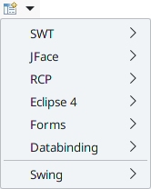
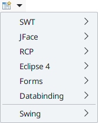
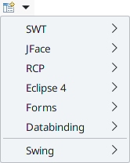

Swing Designer provides a large number of wizards. Each toolkit contributes one or more wizards.
The wizards may be accessed from the Eclipse New wizard (File > New > Other) or the drop down Swing Designer wizard menu in the Eclipse toolbar.
